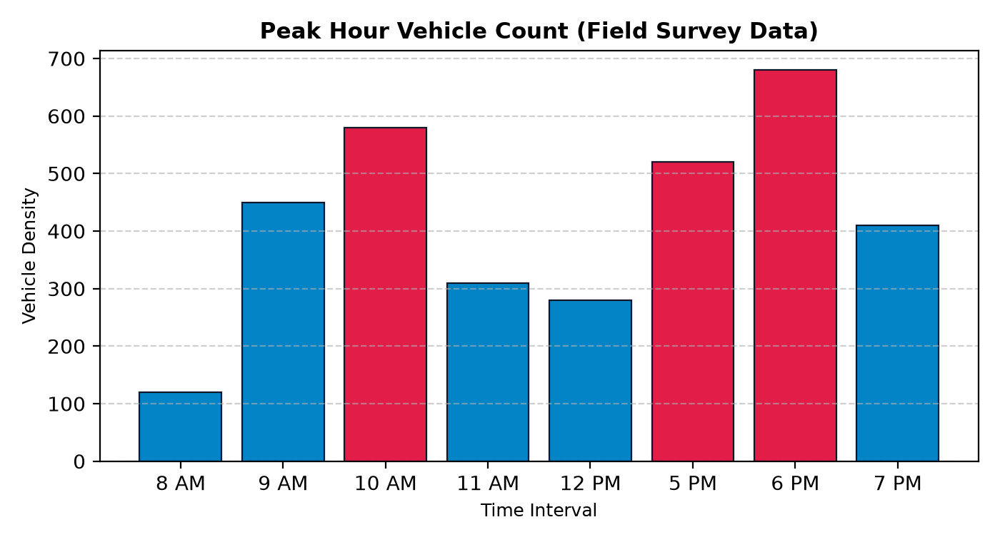
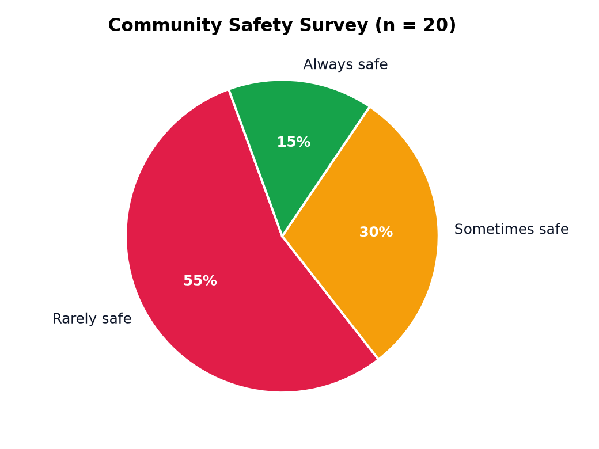

Findings
Traffic insights & findings
What we actually measured: a 15-minute manual vehicle count at our junction and a mini Google Form survey among college peers and neighbours. Every chart below is generated offline by our Python script (Pandas + Matplotlib) and tagged with its source.
Peak hour vehicle count

Manual 15-minute field count at our local junction. Red bars mark peak intervals
(above 500 vehicles). Generated with the Python script in pipeline.py.
Community safety survey

“How safe do you feel crossing your main junction during peak hours?” — mini Google Form shared with college peers and neighbours (20 responses).
What this means
Evening hours are the worst window to cross or ride through the junction — the 6 PM count is more than five times the 8 AM count. Combined with the survey result, the clear takeaway is that pedestrian infrastructure and safer crossing habits need attention exactly when traffic peaks. That conclusion drives the safety tips on the next page.